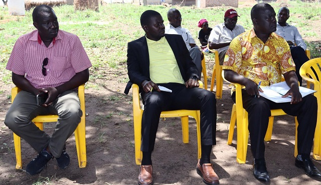

Subscribe to our News letter
Be the first to receive the latest buzz contests & more!
SUBSCRIBE
We Are Uganda News
News We Are Uganda 14 April 2022
Opposition political party candidates who have expressed interest in vying for the Omoro County parliamentary seat have vowed never to step down in favor of former Speaker of Parliament Jacob Oulanyah’s son.
This comes a few hours after George Aligec Lapir, one of the candidates from the National Resistance Movement-NRM party stepped down from the race in favor Oulanyah’s eldest son Andrew Ojok.
Aligec stepped down following a clan meeting on Thursday convened by the Puranga Chiefdom leader, Jimmy Ocan with candidates who expressed interest to contest the Omoro parliamentary seat.
The meeting held in Acet trading center in Odek sub-county was meant to introduce the candidates to clan members and instill a spirit of unity amongst them. However, the Chiefdom Prime Minister Francis Mawa clarified to the candidates that Oulanyah’s family had earlier fronted his son to vie for the position.
“The deceased family came out last time clearly that they are fronting Oulanyah’s son to finish what his father had started, he was offered to the people of Puranga and we all know this,” said Mawa.
Aligec later told Uganda Radio Network in an interview that following the meeting with the clan elders, he had to step down in a show of solidarity and respect for the late Oulanyah.
Six candidates including Oulanya’s son have confirmed their interest in proceeding with the Omoro County Parliamentary race. Omoro county parliamentary seat fell vacant following the death of Oulanyah in Seattle, USA on March 20.
The other candidates are Andrew Olal, Francis Rwotlonyo, and Omoro LCV chairperson Douglas Peter Okello, all from NRM. Meanwhile, the opposition candidates are Terrence Odonga from Forum for Democratic Change (FDC), and Godwin Okello from Democratic Party (DP).
Odonga however told URN in an interview that he will not step down in favor of Oulanyah’s son since Omoro County is not a Chiefdom for hereditary leadership. Odonga says he will tussle it out with the deceased son since the clan’s request doesn’t represent the view of all people of Omoro County.
Okello says he will continue with the race arguing that the election is a competitive exercise as enshrined in the country’s constitution. Okello notes that he will as well carry on from where Oulanyah left and continue to be a bridge between the locals in Omoro and the government.
Other NRM candidates who feel threatened by the alleged move to front Ojok as an unopposed flag bearer for the party have expressed concerns and called on their party leadership to exercise transparency.
Olal who has come to contest for the second time having emerged the second after Oulanyah in the 2021 Parliamentary elections says anyone is free to contest adding that the voters will be the judge.
He however called on the party leadership to allow for a fairground for all interested to compete in the party primary election.
Ojok says the gesture of a candidate stepping down in his favor isn’t sympathy but rather a show of unity. He notes that having support to contest for the parliamentary seat wasn’t his own idea but by the people who saw him fit to push forward the legacy of his father.
Denis Kidega, NRM Chairperson for Omoro District says that none of the candidates has formally shown interest, they have been given opportunities to sit down and compromise among themselves on a single candidate.


Be the first to receive the latest buzz contests & more!
SUBSCRIBE